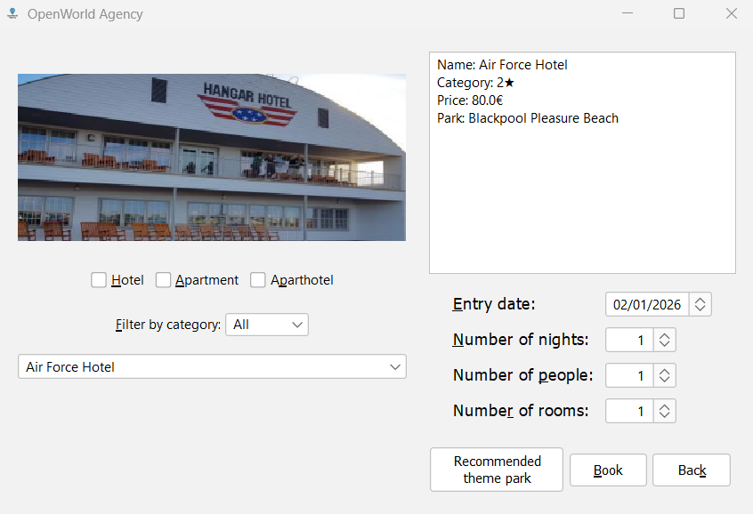

Accommodations panel
In the Accommodations panel you can select and filter accommodations associated with theme parks, view
their details, and book them for a specific date, number of nights, people, and rooms. All accommodations
are always linked to a single theme park.

Elements on the screen
- Park image: Shows the image of the theme park associated with the currently selected accommodation.
- Accommodation selection combo box: Contains all accommodations that match the current filters.
Selecting an accommodation updates the details area and the park image.
- Type filter (checkboxes): Allows you to filter accommodations by type:
- Hotel (HO)
- Apartment (AP)
- Aparthotel (AH)
- Category filter (combo box): Filters accommodations by star rating (e.g. 2, 3, 4, 5 stars).
- Accommodation details area: A scrollable text area showing the accommodation name, type,
category, associated park, and price per night.
- Entry date: Date when the stay begins. This may be different from the park ticket date.
- Number of nights: How many nights you want to stay.
- Number of people: Total number of people staying in the accommodation.
- Number of rooms: For hotels, number of rooms required to respect the occupancy limits.
- Recommended theme park button (if present): In some flows, this button may take you back to
the theme park associated with a previously booked accommodation. Once a certain reservation path
is chosen, this button may be disabled to avoid inconsistent bookings.
- Book button: Adds the selected accommodation and its configuration to the reservation and moves
to the Reservation panel.
- Back button: Returns to the Main Menu and resets all reservation data.
Occupancy rules
- Hotels: Maximum of 2 people per room. The total number of people must be compatible with
the number of rooms.
- Apartments and aparthotels: Maximum of 4 people per accommodation unit (per night).
- The system must check that the capacity of the selected accommodation is not exceeded before allowing the booking.
How to book an accommodation
- Adjust the type filters and category filter to narrow down the list of accommodations.
- Select an accommodation from the accommodation combo box.
- Review the information in the details area and check the associated park.
- Set:
- Entry date
- Number of nights
- Number of people
- Number of rooms (for hotels)
- Click Book to add the accommodation to your reservation and go to the Reservation panel.
Important
- Tickets and accommodations in the final reservation must belong to the same theme park.
- If a park is on offer, the discount is applied to all its tickets and associated accommodations in the final summary.
Related topics